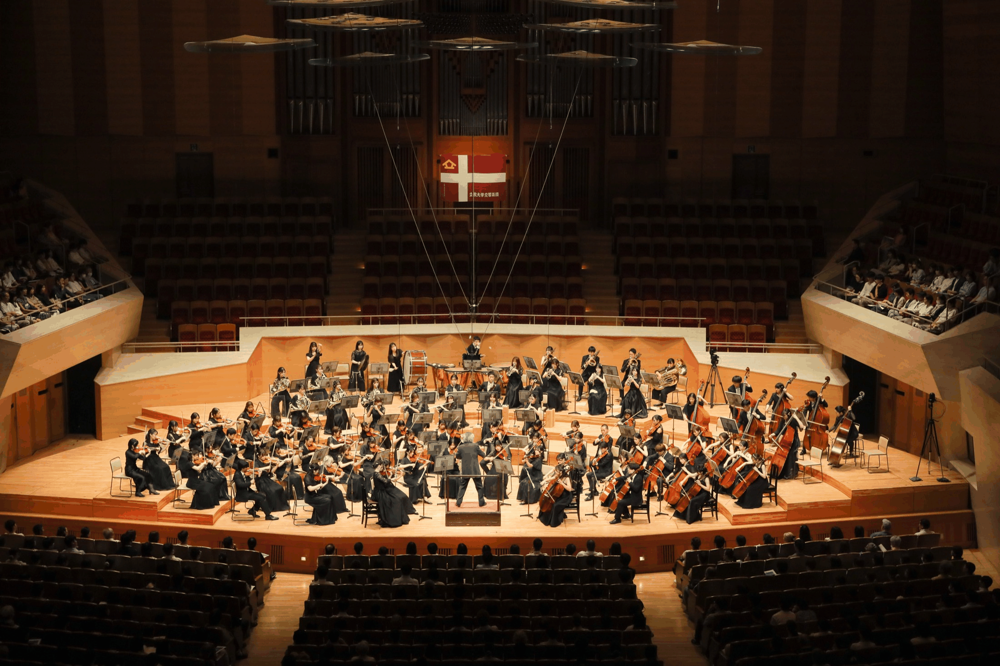

6月 同立交歓演奏会
同志社交響楽団との合同演奏会。長年続く交流の場として、両団の音楽を響かせています。
Concerts
定期演奏会をはじめ、年間を通して行っている主な演奏会・式典演奏についてご案内します。

Upcoming Concert
Annual Schedule
同志社交響楽団との合同演奏会。長年続く交流の場として、両団の音楽を響かせています。
学外のお客様にも向けた演奏機会として開催しています。詳細は年度ごとにお知らせします。
年間の中心となる自主公演です。団員一同、もっとも力を注いで準備を進めています。
聖歌隊やグリークラブとの合同で行う演奏会です。年末ならではの大編成で臨みます。
卒団を迎える団員を送り出す節目の演奏会として開催しています。
入学式・卒業式など本学の式典においても演奏を行っています。